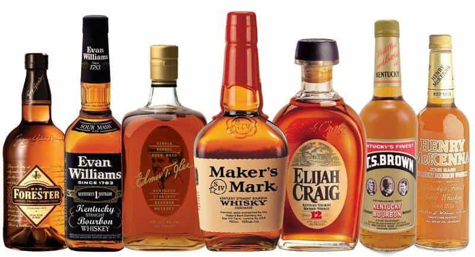
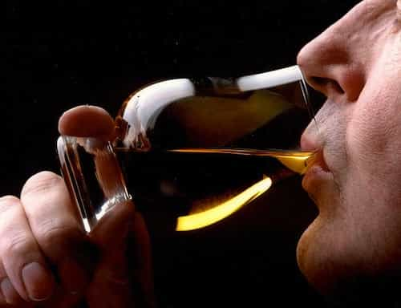

< < < Back
The Gentleman’s Guide to Bourbon – Return Of Kings
One often overlooked aspect of a man’s image is his preferred spirit of choice. While this may seem a trivial point of concern, a man’s signature drink speaks volumes about his level of refinement. Don’t believe me? Picture your average guy in a downtown bar. Put him in an expensive blazer and tie with neatly trimmed hair and quality footwear:
Now, place a can of Bud Light in his hand. You just made a judgment about him. Remove the Bud Light and replace it with a martini. Different guy. A fruity red frozen drink in a long-stemmed glass with an umbrella? Different guy again.
A man’s signature drink is both his ultimate accessory and a powerful personal statement. As is the case with icons like James Bond and Don Draper of Mad Men fame, a drink can come to define your character as much as the car you drive or the clothes you wear.
For men seeking to stand out from Vegas bomb shooting, keg standing, beer chugging frat boy crowd, allow me to introduce you to the quintessential man drink: bourbon.

Bourbon has enjoyed a renaissance among men of class and distinction and as a bartender and resident of Kentucky’s bourbon country, I am proud to see arbiters of taste learning to appreciate America’s native spirit.
Of course, its important for you to know what you are talking about, know how to properly taste bourbon, and to have respect for the craft. Bourbon is distinctly different from other spirits, and knowing those distinctions can be the difference between you looking like a showboating know-nothing or a refined gentleman of great taste and culture.
Take the time to learn what separates grown men from the forever-frat-boys and you’ll be more than a few steps ahead.
Know What You Are Talking About
Every bourbon is a whiskey, but not every whiskey is a bourbon. Unlike whiskey, bourbon is regulated by United States Federal Standards that state all bourbons must have the following characteristics in common:
- bourbon must be produced in the United States
- bourbon must consist of no less than 51% corn
- bourbon must be bottled at no less than 80 proof
- and bourbon must be aged in brand new, charred, oak barrels for no less than 2 years.
While all bourbons follow the same four point blueprint, whiskeys are not regulated as strictly. Some whiskeys can be clear and dangerously high in proof, as is the case with “moonshine”, or can be created from any mish mash of grain that produce sub par or low proof spirits. But with bourbon, you can trust what’s in the bottle.
97% of the world’s bourbon comes from the American state of Kentucky. While it is not mandatory that bourbon originate in Kentucky, the state possesses some of the purest and best tasting limestone water – a key ingredient in bourbon distillation – and one of the best climates for grain growth and barrel aging.
Bourbons fall into two categories: “single barrel” bourbons and “small batch” bourbons. Occasionally, a master distiller – the person responsible for the finished product in a bourbon bottle – will discover a particular barrel resting in the perfect location in the facility where bourbon barrels are stored (called a rick house). Deciding that nothing more needs to be done to improve on the whiskey, he will bottle it straight out of the barrel as a single barrel bourbon. On other occasions, he may discover that he can produce a better tasting bourbon by blending several different barrels together, thus creating a “small batch” bourbon.
You will also encounter “wheated” bourbons and “rye” bourbons. These descriptors indicate the second predominant grain in a bourbon’s composition (with corn, of course, being the primary grain). Whereas corn lends a natural sweetness to all bourbons, wheated bourbons are notably smooth, and rye bourbons tend to be on the spicier side.
Knowing the differences between single barrel, small batch, rye, and wheated bourbons will make you more intelligent than most bar patrons, and will improve your ability to select a good bourbon.
Know How To Taste Bourbon

Newcomers to bourbon often complain that all they can taste is alcohol – a sure sign of an unrefined palate. Tasting bourbon, or anything else for that matter, is a skill that must be developed with practice and attentiveness. To truly appreciate bourbon requires that you sniff it, swish it, and of course swallow it.
Seventy-five percent of what we perceive as taste actually comes from our sense of smell – therefore in order to properly taste a bourbon, one must first smell it. Rather than inhaling your whiskey deeply and slowly, use short, quick sniffs. Doing so will improve your ability to perceive the subtle fruit, floral, earth, wood, and candy-like aromas that the untrained taster is unable to recognize.
When it comes to our sense of taste, we generally sense sweetness, saltiness, sour, and bitterness on different parts of the tongue. In order to pick up on these tastes, take a small sip of bourbon and roll it around on your tongue so that a little lands in every part of your mouth (here, we call swishing ones bourbon around in the mouth the “Kentucky chew”).
Bourbon gets its taste from the water, the types of corn and other grains used in the composition of the bourbon, the yeast strains used to ferment the bourbon, and the barrel aging process. Yeast strains from fruit trees and berry bushes gives different bourbons different subtle fruit notes. As bourbon rests in its barrel, the wood absorbs and releases the bourbon repeatedly over the years, giving the bourbon flavors of toasted oak, char, vanilla, and caramel.
Some bourbons are thick and heavy, and sit on your palate like syrup. Others are very light bodied and almost evaporate on your tongue. Pay attention to these as you taste your bourbon.
Finally, swallow and take note of the finish. Is it uncomfortable to swallow, or does it go down smooth? Is the finish bitter, sour, sweet? Does the pleasant aftertaste last long after you have swallowed, or does the taste evaporate quickly? The finish is where a truly excellent bourbon stands out from the crowd, and can be enjoyed long after you have finished your pour.
A fine bourbon will possess both a pleasant aroma, a strong flavor, and an interesting, pleasant, long lasting finish. These are the things you are looking for – not a fancy label or a brand name you read in a mens magazine.
Respect The Craft
When a man of refinement enjoys a bourbon, he is enjoying generations of apprenticeship, years of aging, and decades of carefully honed craftsmanship. As a man who has witnessed the love, dedication to duty, and life force that master distillers have invested in their craft, so help me God if I see any of you dumping coke, sprite, or fruit punch in a fine bourbon, I will slap your glass out of your hand and dismiss you from the bar.
Chugging a fine bourbon is a cardinal sin on par with polluting it with inferior substances. Bourbon is a spirit that is meant to be sipped and enjoyed slowly. Respect the time that it took to make your whiskey by taking the time to truly taste it. Besides, no worthwhile woman will be impressed by your ability to kegstand, shoot, and chug your way to unconsciousness.
As a side note: men will often take shots of bottom shelf bourbon to aid their game – a practice that can lead to regrettable consequences. Let it be known that while some refer to alcohol as a “Liquid Panty Remover”, puke is far better known as “Liquid Loneliness”, and if you are drinking to improve your game, the only thing you will score is a free ticket to Alcoholics Anonymous.
Once you have found a bourbon you truly love (and there is one out there for you), use it to craft a signature classic cocktail that matches your tastes and personality. Classic cocktails like the Old Fashioned, Manhattan, and the Revolver are routinely consumed by gentlemen of substance as crucial mediums for telling their personal story in a split second. These gentlemen know that standing at a crowded bar, your drink order is not merely a declaration of your alcohol conveyance preferences – it’s you in a glass.
At Bourbon of the Day, our mission as bourbon brand ambassadors is the transformation of our readers and guests into better bourbon drinkers with reviews, tasting notes, and lifestyle guides.
Read More: A Players’ Guide To Wine Appreciation